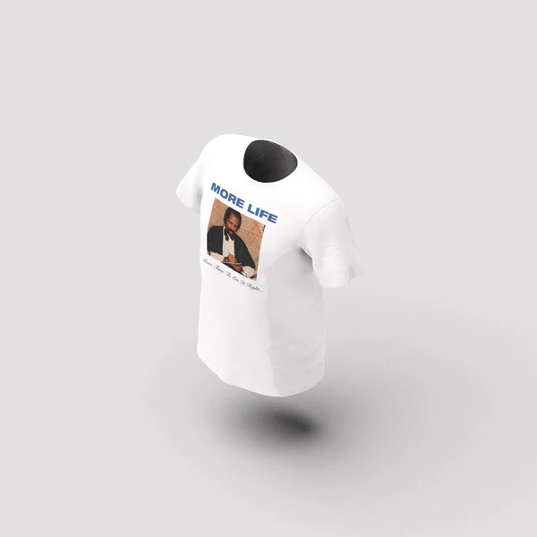

<!doctype html>
<html lang="en">
  <head>
    <meta charset="utf-8">
    <meta name="viewport" content="width=device-width, initial-scale=1">
    <title>Bootstrap demo</title>
    <link href="https://cdn.jsdelivr.net/npm/bootstrap@5.3.3/dist/css/bootstrap.min.css" rel="stylesheet" integrity="sha384-QWTKZyjpPEjISv5WaRU9OFeRpok6YctnYmDr5pNlyT2bRjXh0JMhjY6hW+ALEwIH" crossorigin="anonymous">
  </head>
  <body>
    
    <script src="https://cdn.jsdelivr.net/npm/bootstrap@5.3.3/dist/js/bootstrap.bundle.min.js" integrity="sha384-YvpcrYf0tY3lHB60NNkmXc5s9fDVZLESaAA55NDzOxhy9GkcIdslK1eN7N6jIeHz" crossorigin="anonymous"></script>
  <link href="style.css" rel="stylesheet">

</body>

</html>
<div class="row">
    <div class="col-2">
        <div class="card" style="width: 100%;">
            <div class="card-body">
                <h5 class="card-title">facts abut him</h5>
                <p class="card-text">Aubrey Drake Graham is a Canadian rapper, singer and actor. An influential figure in contemporary popular music, he has been credited with popularizing R&B sensibilities in hip hop artists<p>
            </div>
           
        <div class="row">
          <div class="col">
            <div class="card" style="width: 100%;">
            <div class="card-body">
              <h5 class="card-title">merch he created</h5>
              
         

            <div class="row">
              <div class="col">
                <div class="card" style="width: 100%;">
                <div class="card-body">
                  <h5 class="card-title">his journey to the goal</h5>
                  <p class="card-text"> He found Drake a role on the Canadian teen drama series Degrassi: The Next Generation, in which Drake portrayed Jimmy Brooks a basketball star who became physically disabled after he was shot by a classmate. When asked about his early acting career, Drake replied, "My mother was very sick. We were very poor, like broke. The only money I had coming in was [from] Canadian TV."According to showrunners Linda Schuyler and Stephen Stohn, Drake regularly arrived late on set after spending nights recording music. To prevent this, Schuyler claimed Drake struck an agreement with the set's security guards to gain entry to the set after recording to be allowed to sleep in a dressing room. Drake's first recorded song, "Do What You Do", appeared on The N Soundtrack, which was released by The N (the night-time block for Noggin), as it was the network that Degrassi was airing on in the United States,Being musically inspired by Jay-Z and Clipse, Drake self-released his debut mixtape, Room for Improvement 

                  </p>
                </div>
                


                <div class="row">
                  <div class="col">
                    <div class="card" style="width: 100%;">
                    <div class="card-body">
                      <h5 class="card-title">motivation </h5>
                      <p class="card-text">“Know life is just a game in which the cards are facing down. Im in the world where things are taken, never given how long they choose to love you will never be your decision.”</p>
                    </div>
                    